You’re more prepared than you think.
Whether you’re just starting out or a preparedness pro, gathering your emergency supplies is easy. A good rule of thumb is to have supplies for about 3 days, or 72 hours. You’ll be surprised at how much you already have.
-
In addition to the standard supplies, certain things will help you—and only you—manage during an emergency. Set aside a few items that will give you and your family extra comfort.
-
Everyone enjoys a drink of water. Stay hydrated by gathering one gallon per person, per day.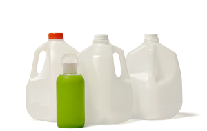
Water
-
You might need to be able to patch up small scrapes until help arrives. Channel your inner Scout and keep a first aid kit on hand.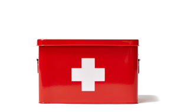
First aid kit
-
While candles are great for ambience, a good torch is invaluable for navigating if power is out. Simply put: it buys you freedom.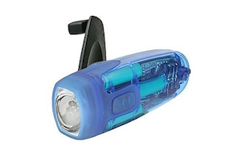
Wind up torch
-
You didn’t start the fire. But you can help extinguish it. Stash a fire extinguisher with your supplies so that you can stay safe.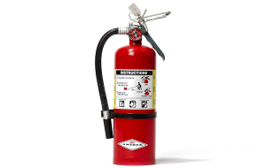
Fire extinguisher
-
Just like when camping, in an emergency an old fashioned can opener is just the ticket. Impress your friends with your canned culinary choices.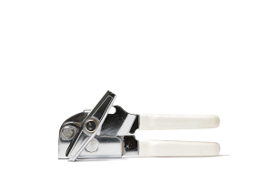
Manual can opener
-
Next time you’re at the shops, add extra long life foods (that you like to eat!) to your basket. We recommend 3 days of food per person.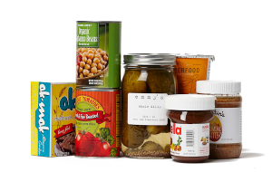
Non-perishable food
-
-
These items represent things that many people want in an emergency—but don’t always think of. Stash them away, and you’ll get through the first 72 hours more easily.
-
You never know when an emergency might happen—or what you might (or might not) be wearing. Be ready for the elements by setting aside warm clothes and walking shoes.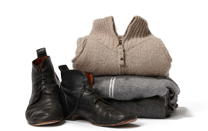
Warm clothes and sturdy shoes
-
Feeling safe starts with knowing what’s going on—so tune into the radio for live updates—and your favorite radio station to pass the time.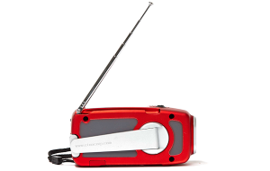
Radio (battery operated or hand crank)
-
In an emergency, credit cards might not work, and cash becomes important. Protect your purchasing power by stashing some cash.
Cash
-
Keeping warm is crucial. Blankets and sleeping bags will help you stay snug, even when snowed in—or if the power goes out.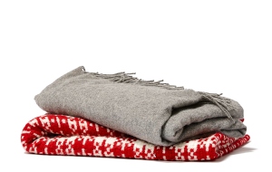
Sleeping bag or blankets
-
A battery operated phone charger, or one that plugs into your car, will help you stay informed, take photos, and communicate in an emergency.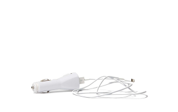
Phone charger (battery operated or car plug-in)
-
A basic toolkit with items like a hammer and duct tape will help you turn off the gas, repair broken windows, or board up your home.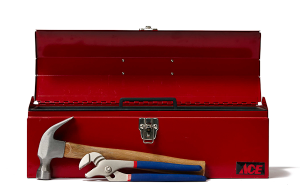
Tools
-
Pencil and paper. Useful if all your gadgets are flat and you need to remember something.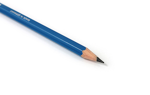
Paper and pencil
-
A handy emergency toolkit and a way to attract attention if you get stuck.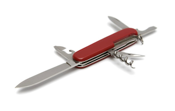
Penknife and whistle
-
Keep a spare set of keys handy.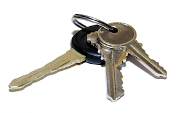
Spare car and house keys
-
-
In addition to the standard supplies, certain things will help you—and only you—manage during an emergency. Set aside a few items that will give you and your family extra comfort.
-
Plan for your personal health. Keep a 3-day dose of any medicine you take on a regular basis, in case the pharmacy is closed. Remember your contact lenses and glasses.

Prescriptions
-
What non-perishable comfort food would lift your spirits? A supply of chocolate, dried fruit, or nuts with your emergency supplies might make you smile, and help you make friends.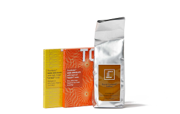
Snacks
-
Toilet paper, feminine supplies, hand sanitizer, a toothbrush, soap, unscented bleach, and heavy duty garbage bags are a good place to start.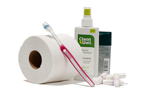
Toiletries
-
Upload copies of your driver’s license, passport, insurance documents and contact list to the cloud. Protect your assets, by going digital. Or make photocopies and keep in a plastic bag.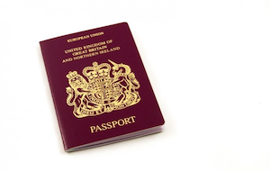
Personal documents
-
What unique items would make your family feel better in an emergency? Favorite games? Special toys? Little things can make a big difference.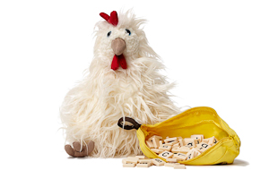
Children’s toys and games
-
Don’t forget to store dog food, toys, or extra water for your pets.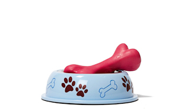
Pet items
-
Come together.
Emergencies are opportunities to come together and support those around you. Sharing a meal, book, or phone charger are even more meaningful in the days after an emergency than before. What items would you share with friends and neighbors?
- 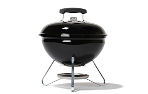 BBQ
- 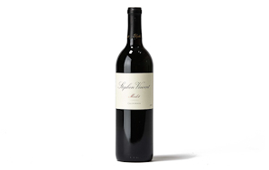 Wine
- 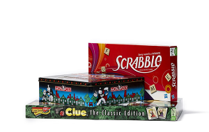 Board games